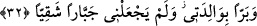
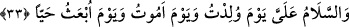

sürece ibâdet ondan düşmez. Delilik ve benzeri hallerle durumu değiştiğinde ise mâzûr
sayılır.
32. “(Beni) anneme iyilik eder (kıldı), beni baş kaldıran bir zorba yapmadı.”
Beni “anneme iyilik eder” kıldı. Yani ona ihsanda bulunan, yumuşak davranan bir
kimse kıldı. Bu ifâde İsa’nın babasız yaratıldığına işârettir. “Beni baş kaldıran” kibirli,
Rabb’ine âsî “bir zorba yapmadı.” Beni böyle yapmadı ki halka tekebbürde bulunayım
ve insanları inciteyim.
33. “Doğduğum gün de, öleceğim gün de ve diri olarak kaldırılacağım gün de bana
esenlik verilmiştir.” dedi.
“Doğduğum gün de” yani tabiî bir babam olmadan doğduğum gün şeytanın
tasallutundan, “öleceğim gün de” ölümün ve ondan sonrasının zorluklarından “ve diri
olarak kaldırılacağım gün de” kıyametin korkusu ve kabir azabından “bana esenlik
verilmiştir.” Rabbimin selâmı benim üzerimedir. Nitekim bu selâm/esenlik Hz.
Yahya’ya da verilmişti. Yani Allah katından bu üç büyük (dehşetli) durumda Yahya’ya
olduğu gibi bana da esenlik verilmiştir.
“es-Selâm” kelimesindeki harf-i ta‘rîf ahd için kabul edildiğinde mânâ böyle olur.
Ancak onun cins için ve İsa (a.s.)’ın düşmanlarına üstü kapalı olarak (ta‘riz) lânet
okumayı ifâde etmektedir. Çünkü İsa (a.s.)’ın her türlü esenliği kendisi için isbât etmesi,
zıd olanlara da esenliğin zıddını isbât için bir dokundurmadır. Nitekim şu âyette de
durum aynıdır: “Esenlik hidâyete tâbi olanlara olsun...” (Tâhâ, 20/47) Bu âyet
doğruyu yalanlayan ve ondan yüz çevirene azabın var olduğunu üstü kapalı olarak
(ta‘riz yoluyla) ifâde etmektedir.
İsa onlara bu sözü söyleyince, annesinin suçsuz ve günahsız olduğuna kesin kanâat
getirip onun mâsum ve şüpheden uzak olduğuna inandılar. Artık İsa bundan sonra normal
konuşma yaşına kadar bir daha konuşmadı.
el-Es’iletü’l-mukhime’de der ki: “Diri olarak kaldırılacağım gün” ifâdesi ile ilgili
olarak şöyle der: Bu âyet kabirde hayat olmadığını gösterir. Çünkü burada tek bir hayat
zikredilmiştir” denirse, bunun cevabı şöyledir: “Burada geçici olan kabir hayatının
aksine ebedî, daimî hayat kasdedilmiştir.”
Fakir (Bursevî) der ki: Şüphesiz berzah (kabir) hayatı, dirilme günü (ba’s) hayatının
yarısı gibidir. Birincisi sadece ruhun hayatı, ikincisi ise hem ruhun hem de bedenin